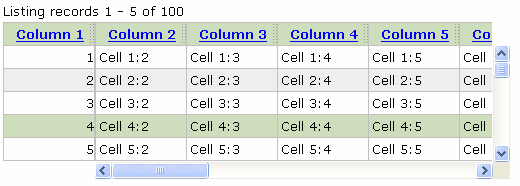
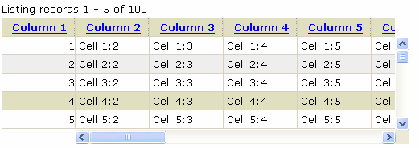
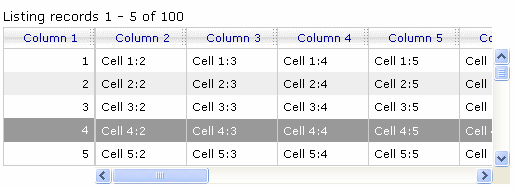
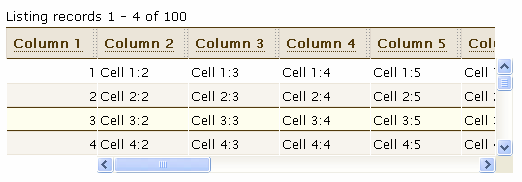
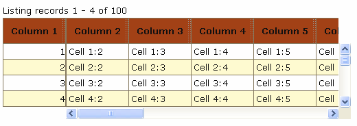
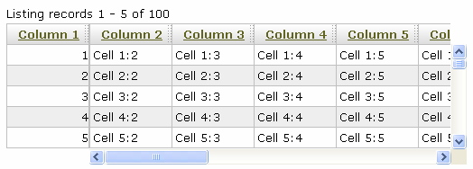

View this page in Japanese
View this page in JapaneseIt is very easy to customize the style of Rico LiveGrids and SimpleGrids. In fact, LiveGrids and SimpleGrids share many of the same class names and DOM structures, so styles that apply to one can be applied to the other.
Rico comes with a variety of stylesheets for LiveGrid. You can see how each of them looks by selecting the first LiveGrid example in the PHP, ASP, .net, or Perl section. At the top of the example page, try each of the "style" selections to find one you like. The actual stylesheets are located in the src/css directory.
Here are screen shots of each style, taken with "highlight" set to "Cursor Row".
greenHdg.css

tanChisel.css

grayedout.css

coffee-with-milk.css

warmfall.css

iegradient.css (only works in Internet Explorer)

Several of these styles are adapted from the CSS Table Gallery. The gallery can serve as an inspiration for styling LiveGrids, however, the CSS used in the gallery examples cannot be applied directly to a LiveGrid.
Even with the variety of pre-configured styles available, inevitably some style declarations will need to be overridden to display your data the way you want it. What follows are some common situations that require a style to be overridden and the suggested CSS styling to solve the issue.
When column headings get too long, you typically want to allow the words to wrap and to display the heading as 2 or 3 lines of text.
Shows headings with 2 lines of text:
.ricoLG_top div.ricoLG_cell {
height:2.5em;
}
Shows headings with 3 lines of text:
.ricoLG_top div.ricoLG_cell {
height:3.5em;
}
Similarly you might need each row in the grid body to be taller in order to display long content.
Show body rows with 2 lines of text:
.ricoLG_bottom div.ricoLG_cell {
height:2.5em;
}
By default, word-wrapping is enabled in each grid cell. But sometimes it makes sense to turn word wrapping off.
Turn word-wrap off in headings and body:
div.ricoLG_cell {
white-space:nowrap;
}
Turn word-wrap off in body only:
.ricoLG_bottom div.ricoLG_cell {
white-space:nowrap;
}
Sometimes you want to apply a style to an entire grid. Each grid is enclosed in a <div> with a class of "ricoLG_outerDiv" and an id equal to the id you passed to the LiveGrid constructor appended with "_outerDiv" (i.e. the id of the grid in the first example is "ex1_outerDiv"). Thus, you can use ".ricoLG_outerDiv" as a selector when applying a style to all grids on a page, or "#ex1_outerDiv" when applying a style to only the ex1 grid.
Set the grid's background color:
div.ricoLG_outerDiv {
background-color:aqua;
}